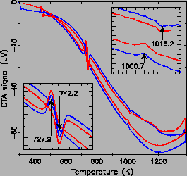
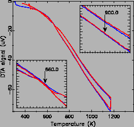

Differential Thermal Analysis (DTA) data collection: The main goal of the DTA measurement was to find the phase transition temperatures TJT and TR, which would be used to guide the later neutron powder diffraction experiments. Sample LaMnO3(A) of 0.1033 gram was sealed under vacuum in one quartz tube end of spherical shape. The standard reference material used is Al2O3 of about 0.0500 gram. The differential thermal measurement was performed on a Shimadzu DMA-50 from 283 to 1373 K, with temperature ramping rate of ten degree per minute and holding time of one minute. Two heating and cooling cycles were run to check reproducibility. About 0.0583 gram of LaMnO3(B) sample was also measured with similar settings.
|
  |
Qualitative results: Fig. 3.9 shows the
raw data from DTA measurements on both samples. Sample LaMnO3(A) shows
rather pronounced thermal peaks across the JT transition (
735 K), and nonetheless distinguishable peaks across the orthorhombic
to rhombohedral (OR) phase transition around TR 1010 K. In
contrast, the LaMnO3(B) response from the JT transition appears around
660 K, and the peaks are rather weak and broad. No identifiable
feature is visible across the expected second OR phase transition
around 800 K. The phase transition temperature was estimated as the
mean of the thermal peak positions during heating and
colling 3.2. By
doing this, we found the TJT of LaMnO3(A) sample is around 735 K,
which is very close to the 750 K for the ``perfect'' stoichiometric
sample. The
TR is around 1010 K, about the same as reported in the literature
for the ``perfect'' stoichiometric sample. The quite weak signals from
LaMnO3(B) sample are somewhat surprising (as the excess O content is
rather small,
1010 K. In
contrast, the LaMnO3(B) response from the JT transition appears around
660 K, and the peaks are rather weak and broad. No identifiable
feature is visible across the expected second OR phase transition
around 800 K. The phase transition temperature was estimated as the
mean of the thermal peak positions during heating and
colling 3.2. By
doing this, we found the TJT of LaMnO3(A) sample is around 735 K,
which is very close to the 750 K for the ``perfect'' stoichiometric
sample. The
TR is around 1010 K, about the same as reported in the literature
for the ``perfect'' stoichiometric sample. The quite weak signals from
LaMnO3(B) sample are somewhat surprising (as the excess O content is
rather small,  0.006), suggesting the Mn4+ contents (due to
excess oxygen) drastically affect both phase transitions. Those
transition temperatures were further confirmed by our neutron powder
diffraction experiments discussed later.
0.006), suggesting the Mn4+ contents (due to
excess oxygen) drastically affect both phase transitions. Those
transition temperatures were further confirmed by our neutron powder
diffraction experiments discussed later.
To summarize, the DTA measurements successfully located the two phase transition temperatures. The LaMnO3(A) sample is shown to be very close to be stoichiometric, and the presence of small amount of Mn4+ should not compromise our studies. The LaMnO3(B) sample appears to be less stoichiometric as expected. Still, it is very interesting to see how our microscopic structure results depend on the slight excess oxygen content.